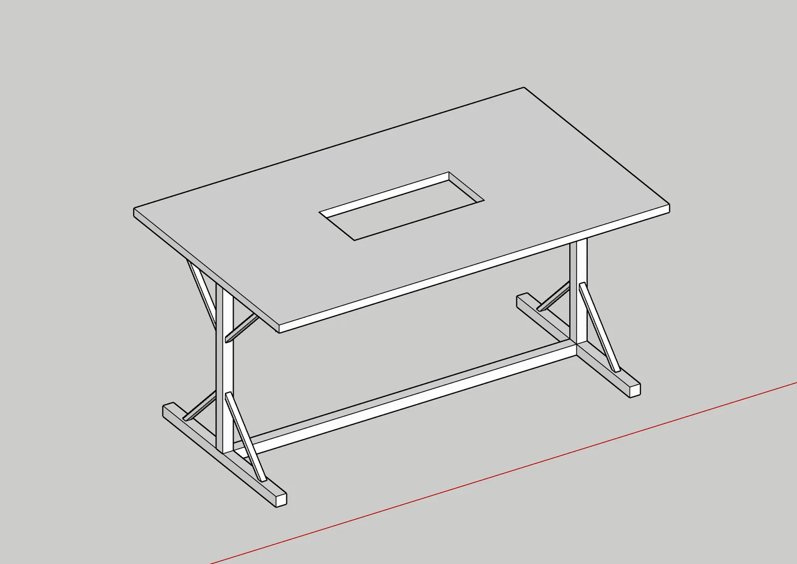
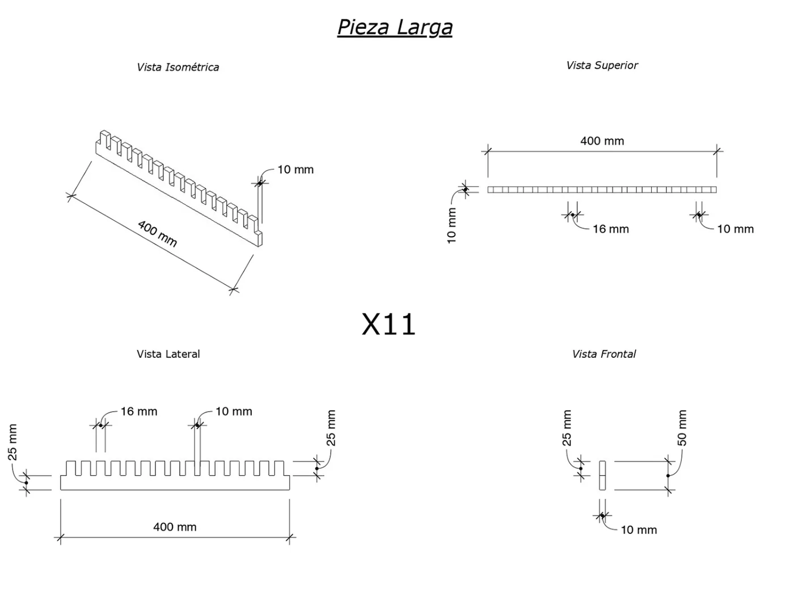
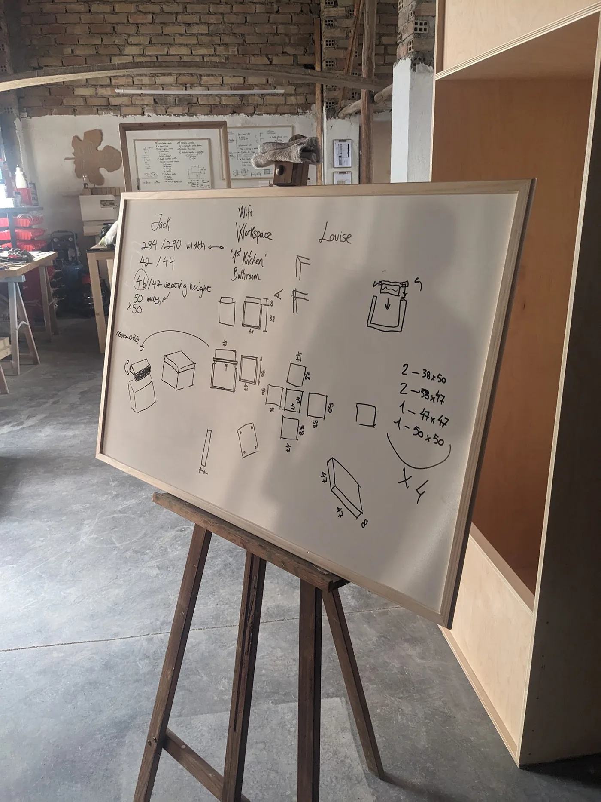
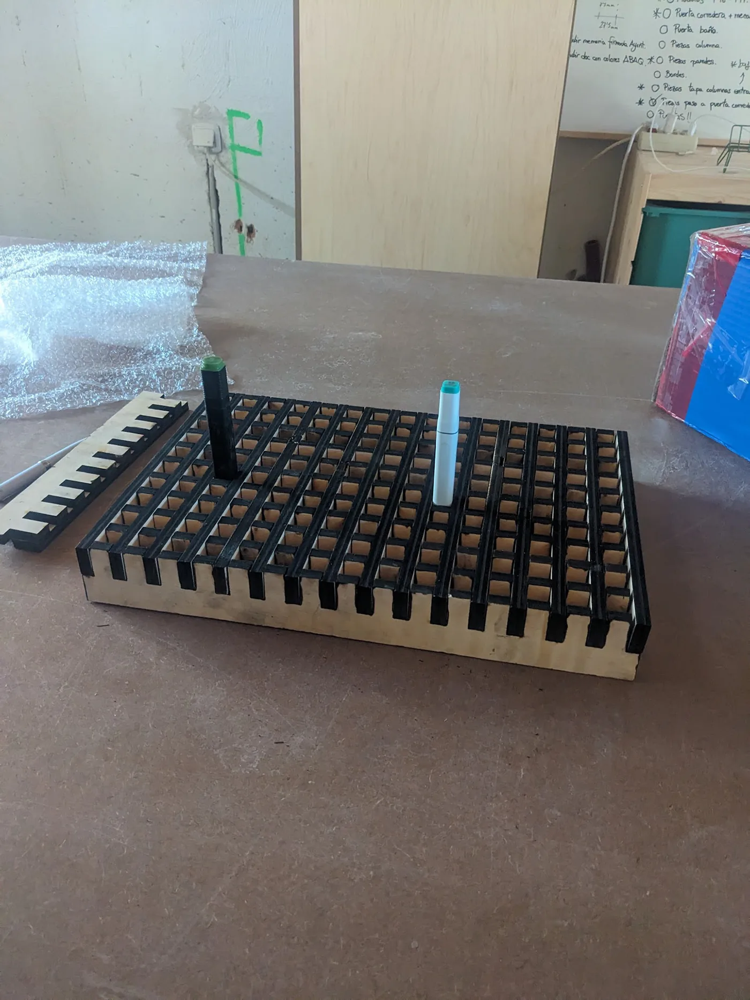
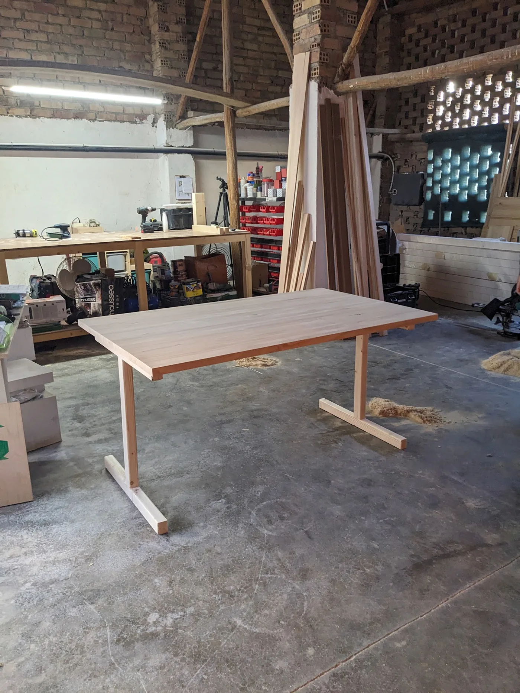
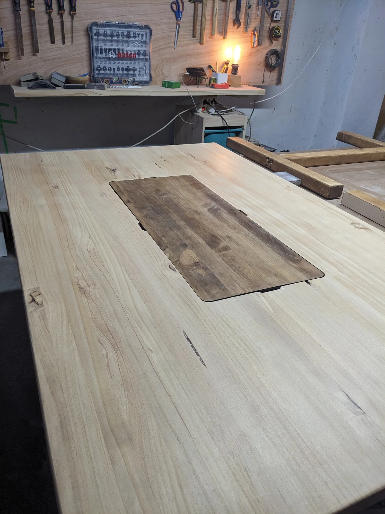
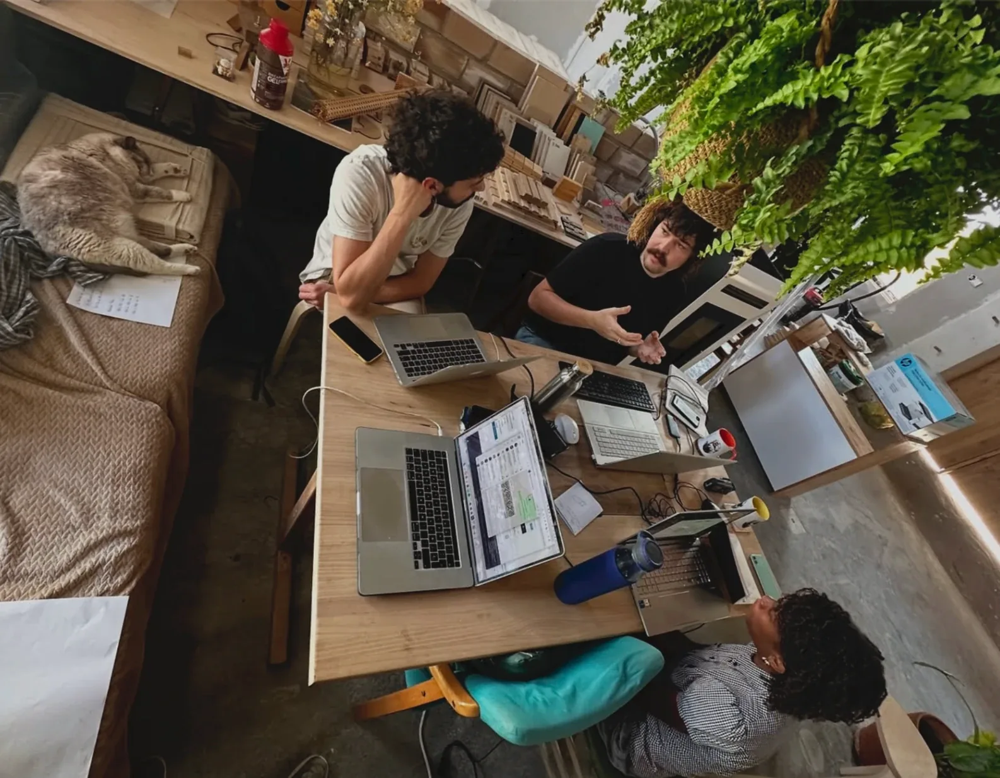

Workshop Drawing Table
A shared surface designed for drawing, discussion and making.
Built
Designed and built for a working carpentry studio, this bespoke table responds to the way ideas move between conversation, sketching and fabrication. A recessed marker well keeps drawing tools within reach, while a roll of brown paper feeds across the tabletop to create a continuously renewable surface for notes, diagrams and full-scale thinking.
The design was developed by observing what the workshop needed, then working backwards from those uses into a robust and economical structure. Its timber frame, broad top and integrated accessories make it both a practical workbench and a place where several people can gather around an idea.
- Location
- Granada, ES
- Year
- 2025
- Status
- Designed + built
- Type
- Bespoke Furniture · Making
- With
- El Secadero de Reviverdes







Building the table made the value of full-scale making immediate. Decisions about proportion, stability, access and detail could be tested through the material rather than resolved only on screen. That process strengthened a way of working in which fabrication is not simply the final stage of design, but part of how the design is discovered.
Have a place, programme or experience to improve?
Explore design consultancy